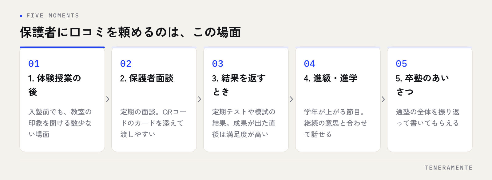

塾を探す保護者は、チラシより先にスマートフォンの地図を開きます。結論から申し上げると、学習塾のMEO対策は、教室情報を学年と科目まで書き切ることと、口コミを頼む場面を年間の予定に組み込むことの2つでほぼ決まります。順位を上げる裏技の話ではなく、保護者が知りたいことを先に書いておく作業です。
📌 この記事の結論
学習塾のGoogleビジネスプロフィールは、「どの学年の、どの科目を、どんな形で教える教室か」が一目で分かる状態を作るところから始めてください。そのうえで、体験授業・保護者面談・進級など保護者と話す場面に口コミの依頼を組み込む。この2つが、地図検索から体験申込につながるかどうかの分かれ目です。
01学習塾のMEO対策は、保護者が使う検索語から考える
MEO（Map Engine Optimization、地図検索での最適化）の解説は、飲食店や美容室を前提に書かれているものが多くあります。学習塾は、そこと検索のされ方が違います。
保護者が入れる言葉は「塾」単体ではありません。「中学生 塾 ○○駅」「個別指導 小学生 ○○町」「高校受験 塾 近く」のように、学年と目的が必ず付きます。さらに、検索する人と通う人が別です。調べるのは保護者、通うのは子どもなので、保護者は「成績が上がるか」の前に「安全に通えるか」「先生がどんな人か」「費用の話を正直にしてくれるか」を見ています。
| 項目 | 飲食店・美容室 | 学習塾 |
|---|---|---|
| 検索する言葉 | 地域名＋業種 | 地域名＋学年＋目的（受験・補習など） |
| 判断する人 | 本人 | 保護者（通うのは子ども） |
| 見られる情報 | 価格・空き状況・雰囲気 | 対象学年・指導形態・通塾の安全・講師 |
| 口コミが増える場面 | 来店ごと | 体験授業・面談・進級など年に数回 |
| 決めるまでの期間 | 当日〜数日 | 数週間（比較と相談を経る） |
学年と目的が検索語に入るのだから、プロフィールにも学年と目的を書いておく。これが出発点です。
02教室の基本情報は、学年と科目まで書き切る
Googleビジネスプロフィール（GBP）のビジネス情報欄は、多くの塾で「○○教室です。一人ひとりに寄り添った指導を行っています」といった一般的な文章で終わっています。これは、保護者が知りたいことをほとんど答えていません。
書き切るべき項目は決まっています。対象学年（小1から高3までのどこか）、指導形態（個別・少人数・集団・映像・オンライン併用）、対応科目、受験の対応範囲（中学受験・高校受験・大学受験・定期テスト対策）、授業の時間帯と曜日、自習室の有無と使える時間。この6点が書かれているかどうかで、保護者が候補に残すかどうかが変わります。
費用は、金額を書かない場合でも「学年と回数によって変わるため、面談でお見積りをお出しします」と明記しておくほうが問い合わせは増えます。保護者が避けたいのは、聞かないと何も分からない状態です。
商品・サービスの機能を使って、コースごとに「中学生 個別指導（週2回・数学／英語）」のように並べておくと、検索結果の中でも何を扱う教室かが伝わります。設定の手順はGoogleビジネスプロフィールの商品・サービス機能の使い方で詳しく整理しています。
03カテゴリと教室名は、教室単位で決める
メインカテゴリは、受注の中心に合わせます。個別指導が中心なら個別指導塾、集団授業が中心なら学習塾です。予備校・進学塾・英語教室など近いカテゴリが複数あるので、売上のいちばん大きい形態を基準に1つだけ選び、サブカテゴリには実際に提供している範囲だけを足します。
教室名は、看板に出している正式な名前をそのまま入れるのが原則で、「○○ゼミナール ○○駅前校」のような形になります。ここに「中学受験に強い」「成績保証」といった宣伝の言葉を足すと、ガイドライン違反として情報が差し戻される場合があります。
複数教室を運営している場合は、教室ごとに別のプロフィールを作り、それぞれに住所と電話番号を持たせます。1つにまとめると、どの教室の情報なのか分からなくなり、地図上でも1か所しか表示されません。電話を本部で受けている場合も、プロフィールの番号は教室の番号にしておくと、保護者が教室の様子を聞きやすくなります。カテゴリ選びの考え方はGoogleビジネスプロフィールのカテゴリの選び方にまとめています。
04写真は、教室の中と通塾の安心が伝わるものを選ぶ
塾のプロフィールで不足しがちなのが写真です。外観だけが1枚では、中の様子が分かりません。保護者は、子どもが通う場所を事前に見たいと思っています。
載せる写真は、次の順で揃えると効果的です。教室の入口（夜でも分かるように明かりが付いた状態）、自習室や個別ブースの様子、授業中の教室（生徒の顔が写らない角度）、使っている教材が並んだ棚、駅や通学路から教室までの道順が分かる1枚。顔が分かる形で生徒を写す場合は、保護者の許可を必ず取ってください。
講師の写真は、載せられる場合は効果が大きい部分です。誰が教えるのか分からない不安が、写真1枚で軽くなります。常勤の講師だけでも構いません。
撮る習慣がないと写真は増えません。学期の初め、模様替えのとき、季節講習の初日といった行事に撮影を紐づけておくと、年に数回は自然に新しい写真が増えます。
05口コミは、保護者に頼める数少ない場面に組み込む
飲食店は来店ごとに口コミを頼めますが、塾は保護者と顔を合わせる機会が限られています。だからこそ、頼む場面を先に決めておかないと口コミは増えません。

現実的に依頼できるのは、体験授業の後、定期の保護者面談、定期テストや模試の結果を返すとき、進級・進学のタイミング、そして卒塾のあいさつです。このうち、満足度がもっとも高いのは成果が出た直後と卒塾時です。年間の予定表に「この面談のときに口コミのお願いをする」と書き込んでおくのが確実です。
依頼の言い方と渡し方
口頭で「口コミを書いてください」と言うだけでは書かれません。QRコードを印刷した小さなカードを用意し、面談の終わりに「教室を探している方の参考になるので、よろしければ」と添えて渡す形が自然です。書く内容を指定しない、謝礼を渡さない、この2点は守ってください。見返りを伴う依頼はガイドラインに反し、口コミが削除される可能性があります。集め方の詳しい手順はGoogleの口コミを増やす方法にまとめています。
返信と、合格実績の書き方
口コミへの返信は、塾の対応を見る材料になります。良い内容には短くお礼を述べ、厳しい内容にも反論せず事実だけを整えて返します。ここで注意が必要なのは、返信の中で生徒個人が特定できる情報を書かないことです。学年、志望校、点数の推移を返信に書くと、本人が分かってしまう場合があります。
合格実績を投稿や情報欄に載せるときも同じで、人数が少ない教室では学校名と人数の組み合わせから個人が分かります。「○○高校合格者在籍」のような控えた書き方にするか、保護者の同意を得たうえで載せてください。また「必ず成績が上がる」「絶対合格」といった断定の表現は、広告の表示として問題になり得るため避けます。
06地図から来た問い合わせを取りこぼさない受け方
表示が増えると、電話とメッセージが来ます。塾の場合、保護者が連絡する時間帯は夜と土日に偏ります。授業中で電話に出られない時間が長いと、ここで取りこぼします。
対策は難しくありません。営業時間を授業の時間ではなく電話を受けられる時間に合わせて登録し、受けられない時間があるなら情報欄に「授業中はお電話に出られないため、折り返します」と書いておく。ウェブサイトのリンク先は、トップページではなく体験授業の申込ページにしておく。この2つで、連絡の取れなさがかなり減ります。
メッセージ機能は、返信できる体制があるときだけ有効にしてください。返信が遅いと、その履歴が保護者に見えます。
季節講習の募集期間は、問い合わせが集中します。募集が始まる2週間前から投稿機能で告知を出し、締切の日付を明記しておくと、迷っている保護者の後押しになります。
07月に一度のチェックリストと、よくある失敗
塾のプロフィールは、学年が切り替わる時期に情報が古くなります。月に一度、次の項目だけ見てください。
- 授業の時間帯と曜日が、今の時間割と合っているか
- 対象学年の記載が、今年度の募集範囲と合っているか
- 季節講習や休塾日が、特別営業時間として入っているか
- 新しい口コミに返信できているか（1週間以内を目安に）
- 写真が3か月以上追加されていないままになっていないか
- 電話番号とウェブサイトのリンクが、今も繋がるか
- 他人によるプロフィールの編集提案が反映されていないか
よくある失敗
教室名に宣伝文句を入れる。「成績保証」「○○高校合格実績No.1」などを教室名に足すと、情報が差し戻されたり、プロフィールの停止につながります。看板の名前だけにしてください。
対象学年を書かない。「地域に根ざした指導」だけでは、小学生向けか高校生向けかが分かりません。
口コミを依頼する場面を決めていない。塾は接点が年に数回しかないため、場面を決めないと誰も頼みません。面談の予定に組み込んでください。
謝礼と引き換えに口コミを集める。割引や粗品を条件にした依頼はガイドライン違反です。せっかく集めた口コミが削除される可能性があります。
合格実績を細かく書きすぎる。生徒数の少ない教室では個人が特定されます。同意を取るか、控えた書き方にしてください。
08自分で進める場合と、専門家に任せる場合の分かれ目
一般論として、判断の基準は3つあります。
一つ目は、教室の情報を書き切れているかどうかです。対象学年、指導形態、科目、時間帯まで文章にできるなら、入力作業そのものは自社で進められます。ここで言葉に詰まるなら、何を売りにしている教室なのかが整理できていない状態なので、まず整理を手伝ってもらうほうが早いです。
二つ目は、口コミへの返信が毎月回るかどうかです。設定は一度で終わりますが、返信は続く作業です。塾は保護者対応と授業準備で手が埋まる仕事なので、返信が2週間止まるようなら、文面の形だけでも外に用意してもらう判断が合理的です。
三つ目は、教室の数です。1教室なら自社で十分に管理できます。複数教室を運営していて、教室ごとに情報の鮮度が揃わないなら、一括で管理する仕組みが必要になります。教室が増えるほど、手作業では揃わなくなります。
迷う場合は、現状のプロフィールを見てもらい、直すべき点の一覧だけを出してもらう形がもっとも損が少ない進め方です。やることが具体的な作業に分かれれば、自社でやれるものと、任せたほうが早いものが自然に見えてきます。
09よくある質問
開校したばかりで口コミが1件もありません。どこから始めるべきですか？
フランチャイズの加盟教室です。本部がプロフィールを管理している場合はどうなりますか？
自習室だけを使える時間も、営業時間に入れていいですか？
オンライン授業が中心の塾でも、MEO対策は意味がありますか？
低い評価の口コミが付いてしまいました。削除できますか？
10まとめ：学習塾のMEOは、学年の明記と口コミの場面で決まる
学習塾のMEO対策で見るべき場所は多くありません。対象学年・指導形態・科目・時間帯を書き切り、教室名は看板のまま、写真で教室の中と通塾の道のりを見せる。そして、体験授業と保護者面談に口コミの依頼を組み込む。ここまでやれば、「塾」とだけ書いてあったときとは、拾える検索が変わります。
逆に、教室名に宣伝文句を足し、一般的な紹介文だけを置き、口コミを頼む場面を決めないままだと、地図の中で何の教室なのか伝わりません。保護者は限られた時間で候補を絞っています。先に答えを書いてある教室が残ります。
TENERAMENTEなら、対象学年とコースの書き分け、カテゴリと教室名の整理、複数教室の情報を揃えるところまで一緒に組み立てられます。口コミの依頼カードの文面と返信の型も用意するので、面談の合間に言い方を考える必要がなくなり、毎月止まっていた更新と返信が続くようになります。運用の進め方はMEO/AIO運用代行にまとめていますので、いまのプロフィールを見てほしいという段階でも、お問い合わせからお気軽にご相談ください。